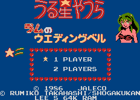

Urusei Yatsura - Nintendo Games

- Company: Jaleco
- Date Released: 23 Oct 1986
- Price (in yen): 4900
- Genre: Platform game
Controls
- A button: Jump
- B button: Shoot
- Start: Pause
- Select: [not used]
From Patriek Lesparre:
This is a horizontal-scrolling platform game. You have to guide Lum to her
wedding with Ataru. You start at Infant School, move on to Elementary School,
then Junior High School, High School, the Studio and finally the Chapel. Lum
grows along the way, until she becomes the woman we know. In the last stage,
the Chapel, Lum will be wearing a weddingdress. This stage is different from
the others, because you can't fire electricity, and you can't duck! You have to
collect wedding-items (flowers, rings, necklaces etc.) while dodging enemies.
When you succeed, Lum and Ataru will get married and the game will start over
again.
Items Found when Jumping at Certain Places
- Jariten comes to help you; he flies above you shooting fireballs at the
enemies.
- You become Rei and all enemies turn into fish that you can eat (extra
points!). You need to be in this state in the later levels to reach the roof!
- Bonus Game: big Cherry-heads fly around the screen and you get
bonus points for shooting them. You can really fly as well!
- Teleports: you will be teleported to another place on the same floor.
- Switches: to switch on moving platforms.
- A red dress works like a shield, protecting you against a limited number
of hits.
Anime Video Game Resource Center © 1998 by Luis A. Cruz